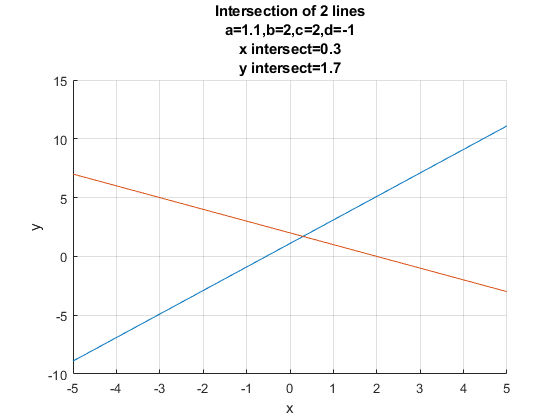

Chapter 6 System of Equations
6.1 System of Linear Equations
Go back to fan’s CodeDynaAsset Package, Matlab Code Examples Repository (bookdown site), or Math for Econ with Matlab Repository (bookdown site).
See also: System of Linear Equations
See also: Solving for Two Equations and Two Unknowns
See also: System of Linear Equations, Row Echelon Form
6.1.1 Linear Equation
If we have an equation: \(a\cdot x_1 +b\cdot x_2 +c\cdot x_3 =o\), we can write this in matrix form:
- \(\displaystyle \left\lbrack \begin{array}{ccc} a & b & c \end{array}\right\rbrack \cdot \left\lbrack \begin{array}{c} x_1 \\ x_2 \\ x_3 \end{array}\right\rbrack =\left\lbrack \begin{array}{cc} a\cdot x_1 +b\cdot x_2 +c\cdot x_3 \end{array}\right\rbrack =\left\lbrack \begin{array}{c} o \end{array}\right\rbrack\)
This is a linear equation, where we have a sequence of variables multiplied by coefficients, more generally, this is a linear equation with \(n\) unknown variables, and \(n+1\) known coefficients, note the \(a\) at the beginning:
- \(\displaystyle a+\beta_1 \cdot x_1 +\beta_2 \cdot x_2 +...+\beta_{_{n-1} } \cdot x_{n-1} +\beta_n \cdot x_n =0\)
In 2 dimension (with two unknowns), this is a line; in 3 dimension, this is a surface.
6.1.2 System of Linear Equations
We have a system of linear equations, 3 equations and 3 unknowns:
- \(\displaystyle \left\lbrack \begin{array}{ccc} a & b & c\\ d & e & f\\ g & h & i \end{array}\right\rbrack \cdot \left\lbrack \begin{array}{c} x_1 \\ x_2 \\ x_3 \end{array}\right\rbrack =\left\lbrack \begin{array}{cc} a\cdot x_1 +b\cdot x_2 +c\cdot x_3 \\ d\cdot x_1 +e\cdot x_2 +f\cdot x_3 \\ g\cdot x_1 +h\cdot x_2 +i\cdot x_3 \end{array}\right\rbrack =\left\lbrack \begin{array}{c} o\\ p\\ q \end{array}\right\rbrack\)
We can define these:
\(\displaystyle W=\left\lbrack \begin{array}{ccc} a & b & c\\ d & e & f\\ g & h & i \end{array}\right\rbrack\)
\(\displaystyle {X}=\left\lbrack \begin{array}{c} x_1 \\ x_2 \\ x_3 \end{array}\right\rbrack\)
\(\displaystyle v=\left\lbrack \begin{array}{c} o\\ p\\ q \end{array}\right\rbrack\)
6.1.3 Augmented Form
We can write \(W\) and \(v\) together like this, this is the augmented matrix of the system of linear equations:
- Augmented Matrix:\(\left\lbrack \begin{array}{cccc} a & b & c & |o\\ d & e & f & |p\\ g & h & i & |q \end{array}\right\rbrack\)
6.2 Solving for Two Equations and Two Unknowns
Go back to fan’s CodeDynaAsset Package, Matlab Code Examples Repository (bookdown site), or Math for Econ with Matlab Repository (bookdown site).
See also: System of Linear Equations
See also: Solving for Two Equations and Two Unknowns
See also: System of Linear Equations, Row Echelon Form
6.2.1 Intersection of two Linear Equations
We have two line:
\[\left\lbrace \begin{array}{c} y=a+b\cdot x\\ y=c+d\cdot x \end{array}\right.\]
Where do these lines intersect? Visually, given some values for \(a,b,c,d\):
% Symbol
syms x
% Parameters
a = 1.1;
b = 2;
c = 2;
d = -1;
% Define Equations
y1 = a + b*xy1 = \(\displaystyle 2\,x+\frac{11}{10}\)
y2 = c + d*xy2 = \(\displaystyle 2-x\)
% Solve for analytical solutions using symbolic toolbox
solve_analytical_x = double(solve(y1 - y2 == 0));
solve_analytical_y = double(subs(y1, solve_analytical_x));
% Plot Figure
figure();
hold;
Current plot held
fplot(y1)
fplot(y2)
% Labeling
ylabel('y')
xlabel('x')
grid on;
title({'Intersection of 2 lines'...
,['a=' num2str(a)...
',b=' num2str(b)...
',c=' num2str(c)...
',d=' num2str(d)]...
,['x intersect=',num2str(solve_analytical_x)]...
,['y intersect=',num2str(solve_analytical_y)]});
6.2.2 Linear Equation in Matrix Form
Sometimes we can write down our problem as a set of linear equations. A linear equation is an equation where the unknown variables are multiplied by a set of known constants and then added up to a known constant:
- for example: \(-2\cdot x+\cdot y=1\), has two unknowns.
Using matrix algebra, we can express the above equation in matrix form:
- \(\displaystyle \left\lbrack \begin{array}{cc} -2 & 1 \end{array}\right\rbrack \cdot \left\lbrack \begin{array}{c} x\\ y \end{array}\right\rbrack =-2\cdot x+1\cdot y=1\)
6.2.3 Two Linear Equation in Matrix Form
We have two equations above, we can write both of them using the matrix form, given:
- \(\displaystyle \left\lbrace \begin{array}{c} y=a+b\cdot x\\ y=c+d\cdot x \end{array}\right.\)
We can re-write these as:
- \(\displaystyle \left\lbrack \begin{array}{cc} 1 & -b\\ 1 & -d \end{array}\right\rbrack \cdot \left\lbrack \begin{array}{c} y\\ x \end{array}\right\rbrack =\left\lbrack \begin{array}{cc} 1\cdot y-b\cdot x\\ 1\cdot y-d\cdot x \end{array}\right\rbrack =\left\lbrack \begin{array}{c} a\\ c \end{array}\right\rbrack\)
We can define these following matrixes to simplify notations:
\(\displaystyle W=\left\lbrack \begin{array}{cc} 1 & -b\\ 1 & -d \end{array}\right\rbrack\)
\({X}=\left\lbrack \begin{array}{c} x\\ y \end{array}\right\rbrack\), note the use of bold letter to represent a vector of unknowns, we could have called small \(x\) and \(y\), \(x_1\) and \(x_2\).
\(\displaystyle v=\left\lbrack \begin{array}{c} a\\ c \end{array}\right\rbrack\)
And the linear system of equations is:
- \(\displaystyle W\cdot {X}=v\)
6.2.4 Linsolve: Matlab Matrix Solution for 2 Equations and Two Unknowns
Once you have transformed a system of equations, you can use matlab’s linsolve function to solve for the unknowns. As long as the two lines are not parallel to each other, you will be able to find solutions:
W = [1, -b;1, -d]
W = 2x2
1 -2
1 1
v = [a; c]
v = 2x1
1.1000
2.0000
solution = linsolve(W,v)
solution = 2x1
1.7000
0.3000
yIntersection = solution(1,1)
yIntersection = 1.7000
xIntersection = solution(2,1)
xIntersection = 0.3000The solution here should match the number in title of the graph plotted earlier.
When you do not have matlab, you can solve for the optimal choices using a combination of elementary row operations.
Note: If we used elementary row operations, and arrived at the reduced row echelon form, the analytical solution would be (and this is what linsolve is doing):
% Analytical Results using elementary row operations
yIntersectionEro = a + b*(c-a)/(b-d)
yIntersectionEro = 1.7000
xIntersectionEro = (c-a)/(b-d)
xIntersectionEro = 0.30006.3 System of Linear Equations, Row Echelon Form
Go back to fan’s CodeDynaAsset Package, Matlab Code Examples Repository (bookdown site), or Math for Econ with Matlab Repository (bookdown site).
See also: System of Linear Equations
See also: Solving for Two Equations and Two Unknowns
See also: System of Linear Equations, Row Echelon Form
6.3.1 Two Equations and Two Unknowns
This is a general system of equations with 2 equations and 2 unknowns
\[\left\lbrack \begin{array}{cc} a & b\\ d & e \end{array}\right\rbrack \cdot \left\lbrack \begin{array}{c} x_1 \\ x_2 \end{array}\right\rbrack =\left\lbrack \begin{array}{cc} a\cdot x_1 +b\cdot x_2 \\ d\cdot x_1 +e\cdot x_2 \end{array}\right\rbrack =\left\lbrack \begin{array}{c} o\\ p \end{array}\right\rbrack\]
this is the augmented matrix:
\[\left\lbrack \begin{array}{ccl} a & b & |o\\ d & e & |p \end{array}\right\rbrack\]
We want to solve for the unknown \(x_1\) and \(x_2\). In matlab, we just use the linsolve function, and in practice we do not solve these by hand. But how is linsolve solving this?
6.3.2 Elementary Row Operations
There are three things we can do to rows of the augmented matrix that do not change the solution to the linear system, they are called elementary row operations, and are very intuitive:
Switch two rows in the matrix: we can move a row up or down, the system is still the same
Replace an existing row by the sum of the row and a multiple of another row:
Multiply all column values of a row by the same non-zero constant:
Using rule 3, we can multiple a row from an augmented matrix by \(Z\)
- \(\displaystyle \left\lbrack \begin{array}{cccc} Za & Zb & Zc & |Zo \end{array}\right\rbrack\)
Using rule 2, we can add up \(Z\) times a row from an augmented matrix and \(Y\) times another row:
- \(\displaystyle \left\lbrack \begin{array}{cccc} Za+Yd & Zb+Ye & Zc+Yf & |Zo+Yp \end{array}\right\rbrack\)
6.3.3 Row Echelon Form
After using elementary row operations to create as many zeros as possible in the lower left side of the matrix, we end up with a matrix that is equivalent to the original matrix that is in the Row Echelon Form, more formally:
Leading Zero: A row of a matrix is said to have, \(k\) leading zero, if the first \(k\) elements of the row are all zeros and the subsequent elements of the row are not zero. (SB P131)
Row Echelon Form: a matrix is in row echelon form if each row has more leading than row preceding (above) it. (SB P131)
Pivot: the first non-zero element in each row of a matrix that is in row echelon form is called a pivot
6.3.4 Row Echelon Form with 2 Equations and 2 Unknowns
Let’s study our system with just 2 equations and 2 unkowns. We can arrive at the row-echelon form in two steps:
Starting with: \(\left\lbrack \begin{array}{ccl} a & b & |o\\ d & e & |p \end{array}\right\rbrack\):
Multiply second row by \(\frac{a}{d}\): \(\left\lbrack \begin{array}{ccl} a & b & |o\\ d\cdot (\frac{a}{d}) & e\cdot (\frac{a}{d}) & |p\cdot (\frac{a}{d}) \end{array}\right\rbrack\)
Subtract the first row from the second row: \(\left\lbrack \begin{array}{ccl} a & b & |o\\ 0 & e\cdot (\frac{a}{d})-b & |p\cdot (\frac{a}{d})-o \end{array}\right\rbrack\)
We now have the row-echelon form, because we have as many zeros as possible in the lower left side
6.3.5 Reduced Row Echelon Form
We can simplify the matrix more and get to the reduced row echelon form.
- A row echelon matrix in which each pivot is a \(1\) and in which each column containing a pivot contains no other non-zero entries a is said to be in reduced row echelon form. (SB P133)
When we are solving a system of \(N\) equations with \(N\) unknowns, the reduced row echelon form gives the solution for the unknowns. With 2 dimensions, the solution is the intersection of 2 lines, and with 3 dimension, the solution is the point intersection of 3 surfaces.
6.3.6 Reduced Row Echelon Form with 2 Equations and 2 Unknowns
Starting with the row echelon form: \(\left\lbrack \begin{array}{ccl} a & b & |o\\ 0 & e\cdot (\frac{a}{d})-b & |p\cdot (\frac{a}{d})-o \end{array}\right\rbrack\):
Divide second row by \(\frac{ea-bd}{d}\): \(\left\lbrack \begin{array}{ccl} a & b & |o\\ 0 & 1 & |\left(\frac{pa-od}{d}\right)\cdot \left(\frac{d}{ea-db}\right) \end{array}\right\rbrack\), which simplifies to: \(\left\lbrack \begin{array}{ccl} a & b & |o\\ 0 & 1 & |\frac{pa-od}{ea-db} \end{array}\right\rbrack\)
Subtract from first row \(b\) times second row : \(\left\lbrack \begin{array}{ccl} a & 0 & |o-b\cdot \frac{pa-od}{ea-db}\\ 0 & 1 & |\frac{pa-od}{ea-db} \end{array}\right\rbrack\)
Divide the first row by \(a\): \(\left\lbrack \begin{array}{ccl} 1 & 0 & |\frac{o}{a}-\left(\frac{b}{a}\cdot \frac{pa-od}{ea-db}\right)\\ 0 & 1 & |\frac{pa-od}{ea-db} \end{array}\right\rbrack\)
Now we have the reduced row echelon form, which tells us that:
- \(\displaystyle x_1 =\frac{o}{a}-\left(\frac{b}{a}\cdot \frac{pa-od}{ea-db}\right)\)
and
- \(\displaystyle x_2 =\frac{pa-od}{ea-db}\)
6.4 Matrix Inverse
Go back to fan’s CodeDynaAsset Package, Matlab Code Examples Repository (bookdown site), or Math for Econ with Matlab Repository (bookdown site).
6.4.1 Inverse of a Matrix
The inverse of \(5\) is \(\frac{1}{5}\), multiplying the two numbers together gives us 1. What is the inverse of a matrix?
The product of the inverse of a matrix and the matrix itself is the identity matrix.
\(\displaystyle X^{-1} X=I\)
\(\displaystyle XX^{-1} =I\)
If we generate any random square matrix in matlab, there is always an inverse:
X = rand(3,3)
X = 3x3
0.5824 0.8004 0.9848
0.0707 0.2859 0.7157
0.9227 0.5437 0.8390
Xinverse = X^(-1)
Xinverse = 3x3
-0.8663 -0.7903 1.6911
3.4905 -2.4393 -2.0163
-1.3091 2.4499 0.6386
Identity = X*Xinverse
Identity = 3x3
1.0000 0.0000 0.0000
-0.0000 1.0000 0
0 -0.0000 1.00006.4.2 Rank of a Matrix
- (SB P142) Rank: The rank of a matrix is the number of non-zero rows in its row echelon form
The Rank of a matrix is the number of non-zero rows in the row-echelon form of the matrix. With 2 equations and 2 unknowns, it just means the two lines are not parallel to each other. If two lines are parallel, then through elementary row operations, one will become all zero, and the system of equations will have no solution.
6.4.3 Invertible Matrix
A square matrix that is invertible has full rank, which means the number of rows equals to the number of columns and the rank of the matrix. This matrix is full-ranked, non-singular and invertible.
6.4.4 Solving System of Equations using Inverse
Given the \(N\) by \(N\) coefficient matrix \(W\) from a system of linear equations, a \(N\) by \(1\) vector of unkonwns \(X\), and \(N\) by \(1\) vector of outcome values \(v\):
- \(\displaystyle W\cdot X=v\)
We can solve for the unknowns by using inverse:
multiply inverse both sides:\((W^{-1} \cdot W)\cdot X=W^{-1} \cdot v\)
left-hand side bomces: \(I\cdot X=W^{-1} \cdot v\)
Identity times a matrix is that matrix, hence: \(X=W^{-1} \cdot v\)
When we use matlab, as an alternative to using the function linsolve, we can solve for the unknown \(X\) just by taking the inverse of the coefficient matrix \(W^{-1}\) and multiply it by \(v\).